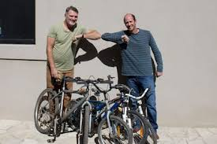
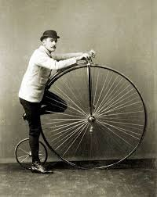

informacion
nuestra historia
Hace diez años, en un pequeño garage de un barrio tranquilo, dos hermanos —Matías y Sebastián— comenzaron a reparar bicicletas. Todo empezó casi de casualidad: arreglaban las bicis de sus amigos y vecinos después del trabajo, simplemente por amor a las dos ruedas y a la libertad que representaban. Con el tiempo, la pasión fue creciendo. La gente los recomendaba de boca en boca y el garage quedó chico. Decidieron alquilar un pequeño local y abrir su primera bicicletería, a la que llamaron "Nuestra Casa", porque sentían que cada cliente que entraba era recibido como en familia. Pero Matías y Sebastián no solo amaban arreglar bicicletas: amaban viajar en ellas. Cada fin de semana libre salían a recorrer rutas de Argentina: desde los cerros de Córdoba hasta los caminos de la Patagonia. Soñaban con compartir esa experiencia con más personas. Así nació la segunda etapa de su proyecto: travesías grupales en bicicleta. Hoy, una década después de aquel primer parche de cámara, "Nuestra Casa" organiza viajes de aventura en bicicleta a países limítrofes como Peru, Uruguay, Brasil. Todo está incluido: transporte de ida y vuelta, hospedaje en hoteles confortables, comidas completas, asistencia técnica y guías especializados. Cada travesía dura una semana, donde los grupos recorren paisajes impresionantes, conocen culturas nuevas y forman amistades para toda la vida. Más que una bicicletería, "Nuestra Casa" se transformó en una comunidad sobre ruedas, un espacio donde el viaje empieza apenas cruzás la puerta.
historia de la bicicleta
La bicicleta tiene más de 200 años de historia y nació como una idea para moverse de forma rápida y económica. La primera versión conocida fue la "draisiana" o "máquina andante", inventada en 1817 por el alemán Karl Drais. Era básicamente una especie de bicicleta de madera sin pedales: uno se impulsaba empujando con los pies en el suelo. Más adelante, a mediados del siglo XIX, en Francia, surgió el primer modelo con pedales en la rueda delantera, llamado velocípedo o "hueso sacudido" porque andar en esos caminos de piedra era tremendo. Luego, en 1870, apareció el biciclo: esas bicicletas enormes con una rueda delantera gigante y una trasera muy chiquita. Eran bastante peligrosas, porque al menor error te caías de una altura importante. Finalmente, en 1885, el inglés John Kemp Starley inventó la bicicleta de seguridad, que ya tenía dos ruedas del mismo tamaño, cadena para transmitir el movimiento y manubrio que controlaba la dirección. ¡Era mucho más estable y segura! Ese diseño es básicamente el que usamos todavía hoy. Con los años, las bicicletas fueron perfeccionándose: Aparecieron los neumáticos inflables (gracias a Dunlop en 1888). Se mejoraron los frenos, cambios de velocidad y materiales (del hierro pesado pasamos al aluminio y la fibra de carbono). Hoy en día hay bicicletas especializadas para todo: montaña, ruta, paseo, BMX, gravel, eléctricas y más. La bicicleta no solo cambió el transporte, también revolucionó la cultura, especialmente para la independencia de las mujeres a fines del siglo XIX, y es hoy símbolo de libertad, deporte, aventura y sustentabilidad.